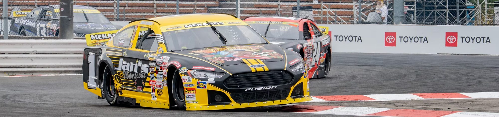

No. 1 · Jan's Towing Ford · Madera, CA
Robbie
Kennealy
Racing since quarter midgets at four and a half, Robbie signed with Jan's for 2025 and broke out: a win from the pole at All American Speedway, 10 top-10s in 12 starts, third in points and Rookie of the Year. Now 20, he's back in the No. 1 and making national ARCA starts too.
2026 ARCA Menards Series West
- 3rdIn points
- 5Top-5s
- 8Top-10s
- 1Pole
- 7.0Avg finish
ARCA West career
- 33Starts
- 1Win
- 12Top-5s
- 20Top-10s
- 176Laps led